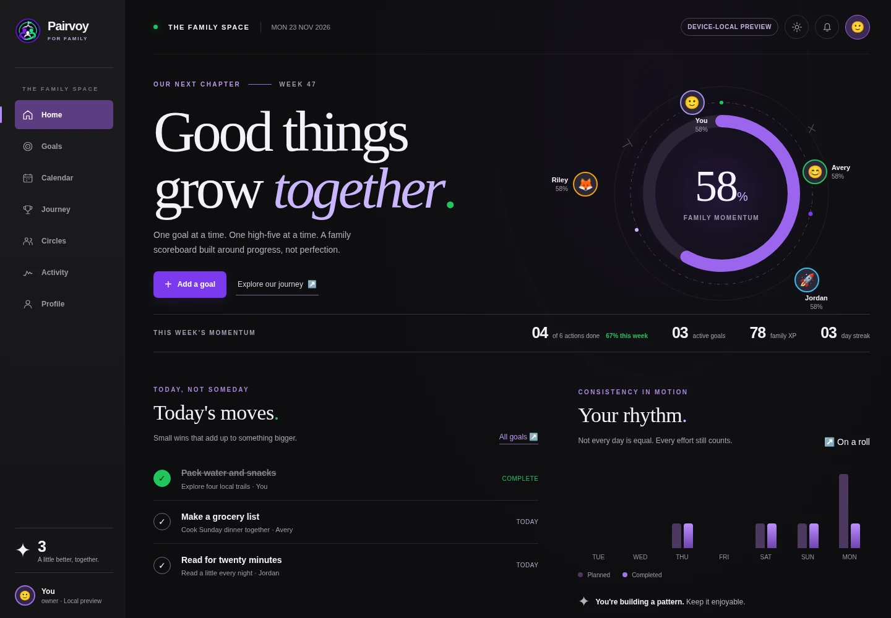

Set personal and shared goals
Work toward something of your own or choose a family goal, like hiking four local trails. Each goal includes five SMART planning fields and four planning checkpoints.
Give everyone in the family a goal to work toward and a way to help. Pick a goal, break it into small steps, and make time to see how far you’ve come together.
Pairvoy for Family 0.1.10 · Windows beta candidate
Bring personal goals and shared plans into one workspace. Whether you’re working toward a family hike or starting a reading habit, everyone can see their next step and celebrate the progress they help make.
Work toward something of your own or choose a family goal, like hiking four local trails. Each goal includes five SMART planning fields and four planning checkpoints.
Create local profiles, schedule one-time or recurring daily actions, and follow the shared daily family quest. The calendar’s timeline and agenda bring upcoming goals and tasks into view.
See completed actions alongside progress toward the outcome. Open an interactive family Orbit member preview, review the weekly shared recap, and write private task notes and reflections.
Earn XP, explore eight achievement types, and customize experience rewards such as movie nights and family outings. Participation reflects each person’s own planned commitments for the week.

Pairvoy for Family uses the same ORBIT interface across its configured builds. A shared rules engine validates changes to goals, milestones, and profiles before saving them to the device.
| Dependency | Version | Role |
|---|---|---|
| Expo | ~57.0.27 | Development tooling and web and Android builds |
| React and React DOM | 19.2.3 | App components and browser rendering |
| React Native / Web | 0.86.3 / ^0.21.0 | Shared app shell and browser support |
| TypeScript | ~6.0.3 | Compile-time type checking |
| AsyncStorage | 2.2.0 | On-device workspace and preferences |
| React Native WebView | 13.16.1 | ORBIT rendering on Android |
| Electron / electron-builder | 45.0.0 / 26.18.0 | Windows runtime and installer packaging |
Build environment. The project declares Node.js 24 or 26. The 0.1.10 GitHub workflow passed unit tests, TypeScript, web export, npm audit, Playwright, Trivy and unsigned Windows x64 packaging. Actual Windows upgrade and Android device acceptance remain separate checks.
Project facts. Pairvoy for Family is developed separately from Pairvoy for couples and has its own local data store. It supports nine goal categories, including Health, Learning, Home, and Finance. The source is maintained in a private repository with an MIT license file.
Goals, actions, and profiles live on the device. Use sample data during testing, especially for child profiles. Separate sign-ins, invitations, and cross-device sync are planned for a future release.
Version 0.1.10 includes live profile color and avatar previews, male and female characters, SMART goal plans, recurring daily actions, a daily family quest, interactive Orbit, eight achievement types, customizable experience rewards, weekly recap, and an optional five-member demo with six months of tasks.
The unsigned Windows x64 installer has been built successfully. Public downloads are pending a real in-place upgrade test to confirm existing local data is retained. Android packages are not yet available.
Explore the original Pairvoy for couples